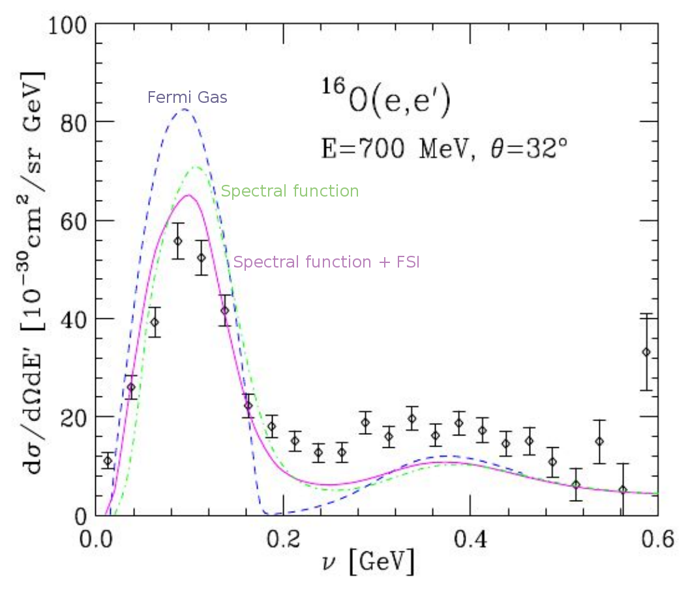
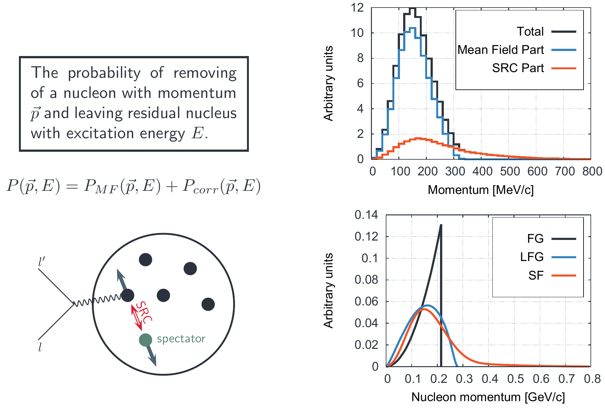
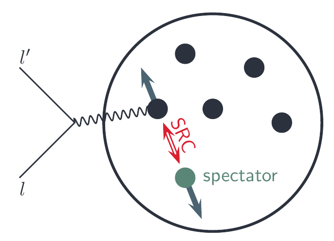
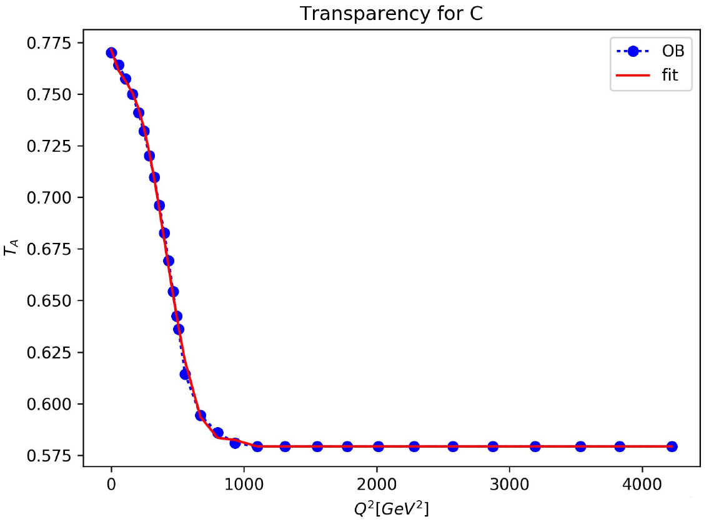
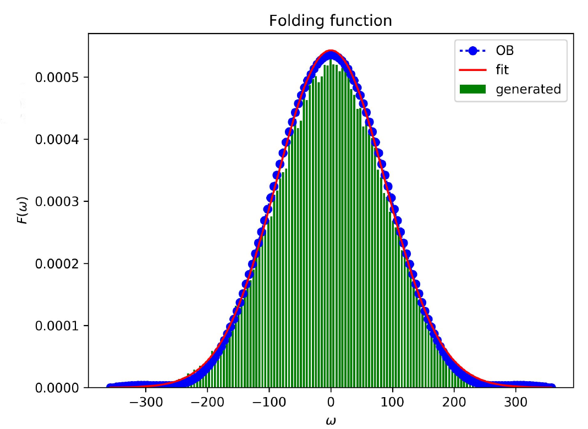
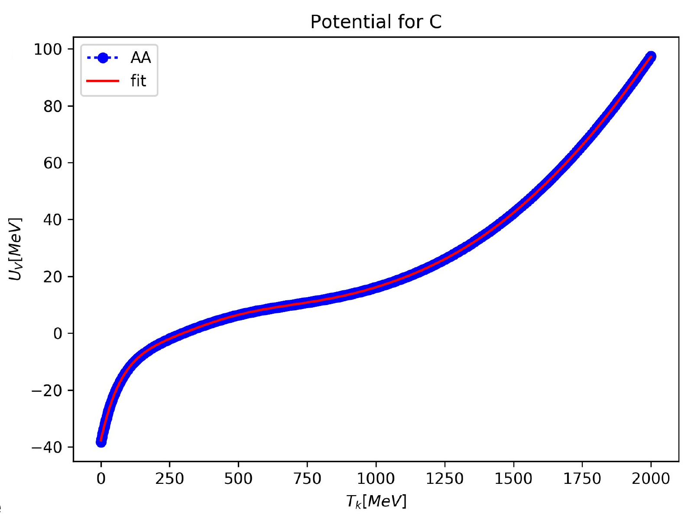
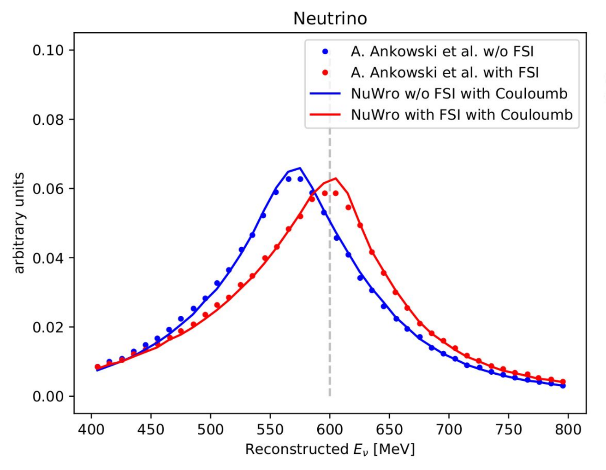
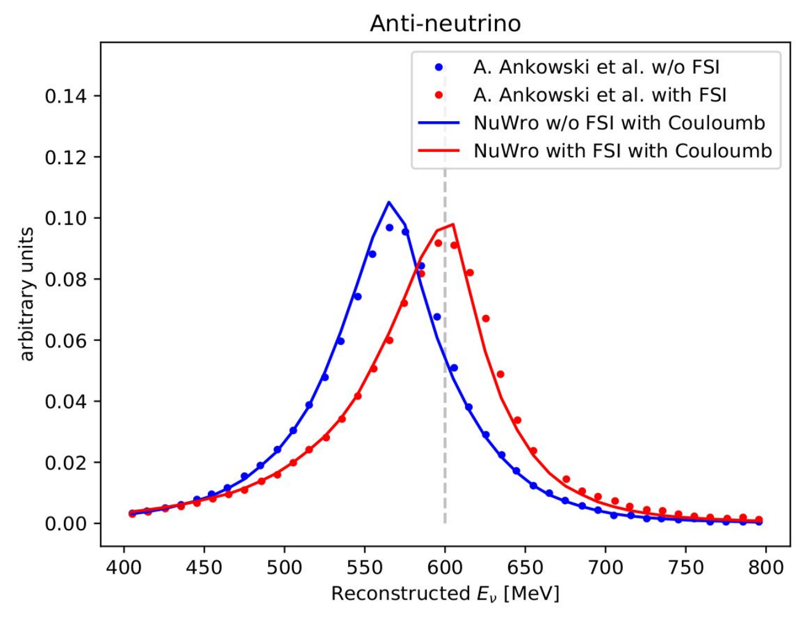
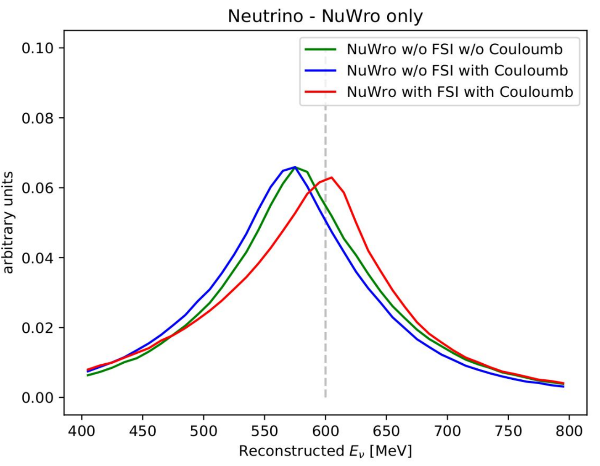
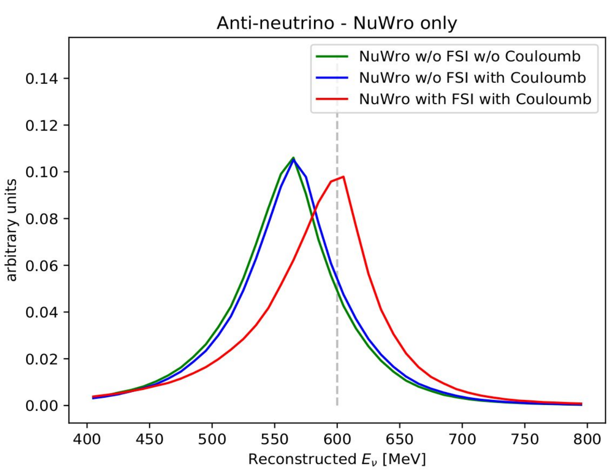

Spectral function in NuWro
Tomasz Golan (on behalf of NuWro Collaboration)
03-05.12.2017, NuWro Workshop 2017
Spectral Function
The probability of removing a nucleon with momentum \(\vec p\) and leaving residual nucleus with excitation energy \(E\).
\begin{eqnarray} & & P(\vec p, E) = \\ & & \sum\limits_n \left|\left<\psi_n^{A-1}|a_p|\psi_0^A\right>\right|^2\delta(E + E_0 - E_n) \end{eqnarray}
O. Benhar et al. PRD72 (2005) 053005
Spectral Function Begins
Artur Ankowski PhD Thesis (in Polish) - collaboration with O. Benhar
in NuWro spectral function for:
- carbon
- oxygen
- iron
- (approximated) calcium
- (approximated) argon

Implementation
Starting point
differential cross section (in impulse approximation)
\[d\sigma = x \int dE d^3p P(\vec p, E) \int d^3k' \delta(E_{k'} + E_{p'} - y)\frac{L_{\mu\nu}H^{\mu\nu}}{E_p E_{k'} E_{p'}}\]- \(x = \frac{G_F^2\cos^2\theta_C}{8\pi^2E_k}\)
- \(y = E_k + M - E\) (constant for fixed \(E\) and \(\vec p\))
Momentum and removal energy
momentum (\(\vec p\)) and removal energy (\(E\)) are chosen randomly according to \(P(\vec p, E)\)
integral over \(d^3k'\) is performed for fixed \(\vec p\) and \(E\)
 src: A. Ankowski thesis
src: A. Ankowski thesis
Integral over final lepton kinematics
having \(\vec p\) and \(E\) fixed final lepton kinematics is calculated in CMS frame
this approach is much faster than the original implementation
with good numerical stability
and the result are the same
Spectator
if an interaction happens on correlated nucleon we assume a spectator to have momentum \(-\vec p\)
educated guess method is used to determine if this is a case

Coulomb corrections
Coulomb correction to SF
protons repel each other (smaller binding energy)
protons energy levels are measured
for neutrons one need to apply Coulomb correction
\[P_{hole}^n (\vec p, E) = P_{hole}^{p}(\vec p, E - \Delta)\]\(\Delta = 2.8\) MeV (for Carbon, src: A. Ankowski, PRC86 (2012) 024616)
affects NC and neutrino CC
Charged lepton and Coulomb potential
Coulomb potential decrease (increase) energy of negative (positive) charged particles (leaving nucleus)
assuming constant shift \(\Delta = 3.5\) MeV (for Carbon, src: A. Ankowski et al., PRD91 (2015) 03305)
affects CC (opposite sign for neutrino and anti-neutrino)
Final state interactions
From IA to FSI
knock-out nucleon interacts with spectators, which modifies energy transfer
\[\frac{d\sigma^{FSI}}{d\omega d\Omega} = \int d\omega' f_{\vec q}(\omega - \omega') \frac{d\sigma^{IA}}{d\omega' d\Omega}\]note: fixed angle
\(f_{\vec q}\) - folding function
Folding function
\[f_{\vec q} (\omega) = \delta(\omega)\sqrt{T_A} + (1 - \sqrt{T_A})F_{\vec q}(\omega)\]
- \(T_A\) - nuclear transparency
- \(F_{\vec q}(\omega) = \frac{1}{\pi}\frac{U_W}{U_W^2 + \omega^2}\)
- \(U_W\) is the imaginary part of the potential (\(U = U_V + iU_W\))
- Real part of the potential shifts the energy transfer
\[f_{\vec q}(\omega - \omega') \rightarrow f_{\vec q}(\omega - \omega' - U_V)\]
Nuclear transparency
note: \(\sqrt{T_A} > 0.75\)
\[f_{\vec q} (\omega) = \delta(\omega)\sqrt{T_A} + (1 - \sqrt{T_A})F_{\vec q}(\omega)\]imaginary part of the potential does not have much impact

O. Benhar et al., PRD72 (2005) 053005
Folding function
calculated for fixed \(\vec q = 1\) GeV
it smears energy transfer distribution
in NuWro implementation Gauss fit is used

O. Benhar, PRC87 (2013) 024606
Real part of the potential
\(U_V\) shifts the energy transfer distribution
\(U_W\) smears the energy transfer distribution with the probability \((1 - \sqrt{T_A})\)
both \(U_V\) and \(T\) depends on the final nucleon kinetic energy

A. Ankowski et al., PRD91 (2015) 033005
Final nucleon energy
\[\frac{d\sigma^{FSI}}{d\omega d\Omega} = \int d\omega' f_{\vec q}(\omega - \omega') \frac{d\sigma^{IA}}{d\omega' d\Omega}\]
- to calculate this integral for fixed scattering angle the following approximation is used for final nucleon kinetic energy
\[T_k = \frac{E_k^2 \cdot (1 - \cos\theta)}{M + E_k \cdot (1 - \cos\theta)}\]
MC Procedure
\[\frac{d\sigma^{FSI}}{d\omega d\Omega} = \int d\omega' f_{\vec q}(\omega - \omega') \frac{d\sigma^{IA}}{d\omega' d\Omega}\]
calculate \(\frac{d\sigma^{IA}}{d\omega' d\Omega}\)
calculate \(T_k\) of final nucleon, and then \(U_V\) and \(T_A\)
if
rand[0,1]> \(\sqrt{T_A}\): \(\omega = \omega' + U_V\)else \(\omega = \omega' + U_V + x\), where \(x\) is random from \(F_{\vec q}(\omega)\)
Reconstructed energy
Procedure
original results from A. Ankowski et al., PRD91 (2015) 033005 (include FSI and Coulomb corrections)
reconstructed energy formula (nucleon at rest)
\[E_\nu = \frac{2E_l\tilde M - m^2 + \tilde M^2 - M^2}{2(\tilde M - E_l + |\vec k_l|\cos\theta)}\]\(\tilde M = M - \varepsilon\)
\(\varepsilon = 19\) MeV for neutrino, \(\varepsilon = 6\) MeV for anti-neutrino
Comparison
 
Coulomb on/off
 
Summary
The implementation of spectral function in NuWro
is super fast
includes spectator knock-out
includes Coulomb correction (for Carbon)
includes FSI effects (for Carbon)
Approximated SF for Argon can be used (before the "real one" becomes available)